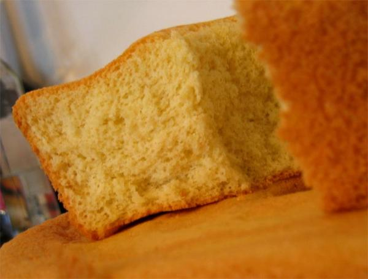

PASTEL DE TRES LECHES
Ingredientes
- 8 huevos
- 180 gramos de azúcar
- 240 gramos de harina
- 1 cucharada de extracto de vainilla
- 30 gramos de mantequilla
- 1 taza de leche entera, 245 g
- 1 taza de leche evaporada, 245 g
- 1 taza de leche condensada, 306 g
- 1 cucharada de extracto de vainilla
- suficiente de crema batida
- suficiente de fresa, rebanadas, para rellenar y decorar
- suficiente de durazno en almíbar, en gajos, para rellenar y decorar
- No abrir el horno antes de tiempo.
Preparación
Para el bizcocho, bate los huevos, las yemas y el azúcar por 8 minutos (aproximadamente), hasta doblar el tamaño. Reserva. Bate las claras por 5 minutos hasta doblar su tamaño y junta con la mezcla anterior de forma envolvente para no bajar el batido. Cierne la harina poco a poco y sigue mezclando de forma envolvente hasta terminar; agrega la mantequilla derretida en forma de hilo. Vierte la mezcla en un molde engrasado y hornea por 50 minutos a 180 °C. Enfría y desmolda.
Para la mezcla 3 leches, mezcla la leche entera, la leche evaporada y la leche condensada.
Baña el bizcocho con abundante mezcla de tres leches
Distribur crema batida, las fresas y los duraznos.
Refrigera por 30 minutos.

Cupcakes
Ingredientes
- 20 gramos de harina para todo uso
- 140 gramos de azúcar
- 1 1/2 cucharadita de polvo de hornear
- 1/8 cucharadita de sal
- 40 gramos de mantequilla sin sal, a temperatura ambiente
- 120 ml de leche líquida
- 1 huevo
- 1/2 cucharadita de extracto de vainilla
Preparación
Precalienta el horno a 325°F.
Coloca en un tazón la harina, azúcar, polvo para hornear, sal y mantequilla y batir con la batidora eléctrica a velocidad baja, hasta que todo esté integrado y se logre una consistencia arenosa.
Agregue poco a poco la mitad de la leche y bata hasta integrar.
Mezcle el huevo, la vainilla y la leche restante y agregue a la mezcla y siga batiendo hasta que esté suave, pero sin batir en exceso.
Colocar la mezcla en los moldes de cupcakes a los que habrá colocado los capacillos y llevar al horno por unos 20 a 25 minutos y estén dorados. Pruebe si están listos insertando un palillo y si sale seco, están listos. Tenga cuidado de no hornearlos en exceso, ya que se pondrán duros.
Decorar los cupcakes, servir y disfrutar!

Flan
Ingredientes
Flan
- 5 huevos
- 1 lata (12oz) de leche evaporada
- 1 lata (14oz) de leche condensada
- 1 cucharada de vainilla
- 1/2 taza de azúcar
Caramelo
- 1 taza de azúcar
- 2 cucharadas de agua
Preparación
Precalienta el horno a 180°C.
Coloca el azúcar para el caramelo en un sartén a fuego medio con las 2 cucharadas de agua hasta que se derrita en forma homogénea.
Cocina hasta que el caramelo adquiera un color dorado.
Viértelo en el molde que usarás. Esparce el caramelo por el molde cuidadosamente hasta que cubra las paredes del mismo. Déjalo enfriar.
Agrega los huevos y licua solo por unos segundos. Luego agrega la leche evaporada y mezcla. Incorpora la leche condensada y mezcla. Agrega la vainilla, el azúcar y continua mezclando hasta que obtengas una mezcla homogénea.
Cuela y vierte la mezcla en el molde que ya tienes previamente acaramelado.
Lleva al horno a baño de María por 45 minutos.
Comprueba que este listo metiendo unos palillos de dientes hasta que salgan limpios.
Deja enfriar a temperatura ambiente hasta que esté completamente frio.
Servir y disfrutar!

Cupcakes
Ingredientes
- 3 huevos
- 1 taza de Azúcar (200 gramos)
- 1 1/2 leche entera
- 2 cucharada de extracto de vainilla
- 1/2 taza de Mantequilla
- 1 1/2 tazas de Harina (210 gramos)
- 1 cucharada sopera de Polvo para hornear
Preparación
Precalienta el horno a 180°C.
Batir las claras de los huevos hasta punto de nieve con un poco de azucar y extracto de vainilla.
En otro recipiente batir la mantequilla con lo que queda de azucar y el extracto de vainilla.
Ir agregando poco a poco la harina cirniendola para que no haya grumos en conjunto con la leche y continuar mezclando hasta que obtener una mezcla homogénea.
Enmantequillar el molde y espolvorear un poco de harina hasta que quede completamente cubierto.(se puede usar papel manteca en vez de este paso)
Lleva al horno por 30 minutos.
Comprueba que este listo metiendo unos palillos de dientes hasta que salgan limpios.
Deja enfriar a temperatura ambiente hasta que esté completamente frio.
Decorar, servir y disfrutar!